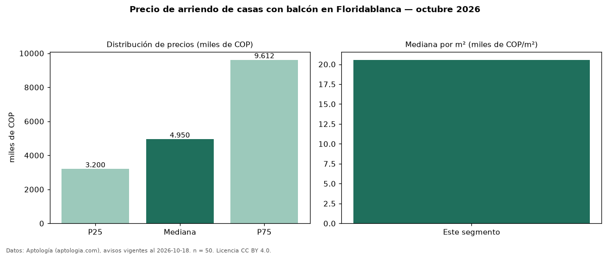

Precio de arriendo de casas con balcón en Floridablanca — octubre 2026
COP 4,95 millones al mes es el canon mediano de casas con balcón en arriendo en Floridablanca (n = 50 avisos). Eso es 27 % más que la mediana de todas las casas en arriendo de Floridablanca (COP 3,90 millones, n = 84); este segmento reúne el 60 % de esos avisos. Por metro cuadrado, la mediana es COP 20.556/m² al mes (n = 49), 4 % por debajo del conjunto de referencia (COP 21.359/m²). La mitad central de los avisos va de COP 3,20 millones a COP 9,61 millones (razón 3,0), una dispersión alta. El área mediana anunciada es 220 m². El segmento con más oferta es el de 3 o más habitaciones (50 avisos, mediana COP 4,95 millones). La administración mediana declarada es COP 756.900 al mes (n = 27), aparte del canon. El estrato más frecuente es 5 (38 % de los avisos con estrato). Datos: Aptología (aptologia.com), CC BY 4.0 — https://www.aptologia.com/arriendo/floridablanca. Archivos: PDF, CSV con las cifras y gráfica PNG.

| Avisos únicos | 50 |
|---|---|
| Percentil 25 | COP 3.200.000 |
| Mediana | COP 4.950.000 |
| Percentil 75 | COP 9.612.500 |
| Mediana por m² | COP 20.555 |
Fuente: avisos vigentes de portales inmobiliarios recopilados por Aptología, deduplicados (mínimo 30 avisos únicos por celda). Precios pedidos, no cerrados. Fecha: 2026-10-18.